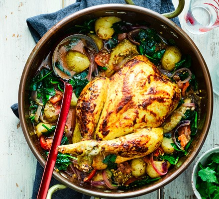

Chicken in a pot

Description
This dish uses just one skillet to prepare. Quick, easy and delicious.
Tomato paste and chicken broth combine to make a tasty sauce. Garnish with
fresh parsley.
Ingredients
- ¾ cup chicken broth
- 1 ½ tablespoons tomato paste
- ¼ teaspoon ground black pepper
- ½ teaspoon dried oregano
- ⅛ teaspoon salt
- 1 clove garlic, minced
- 4 boneless, skinless chicken breast halves
- 3 tablespoons dry bread crumbs
- 2 teaspoons olive oil
- 2 cups fresh sliced mushrooms